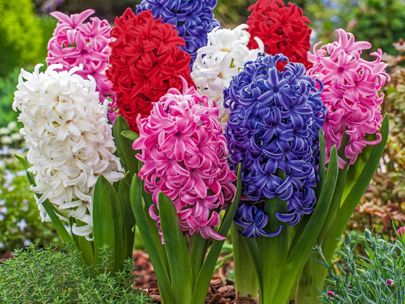
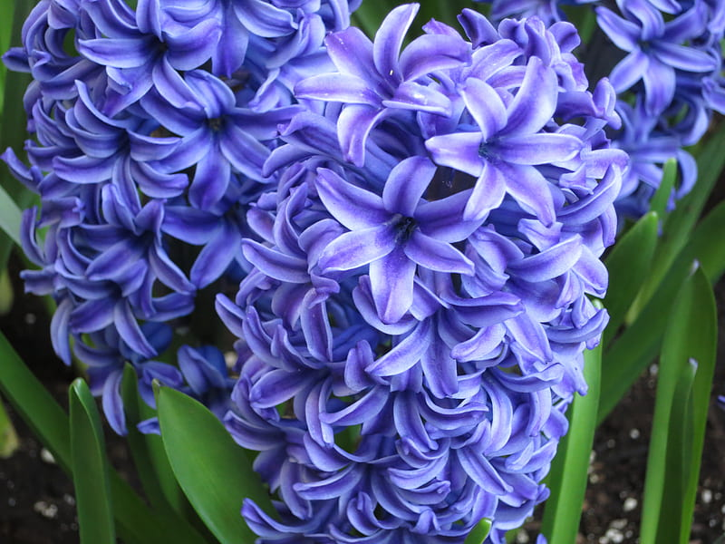
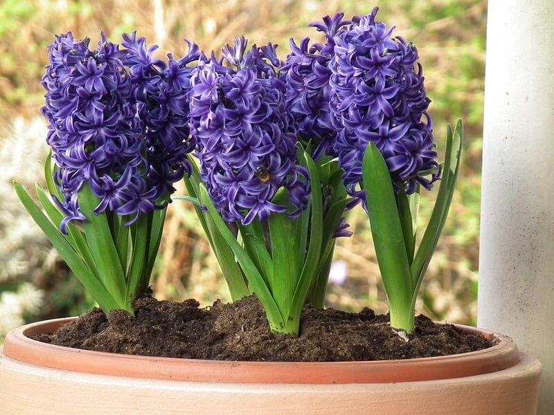
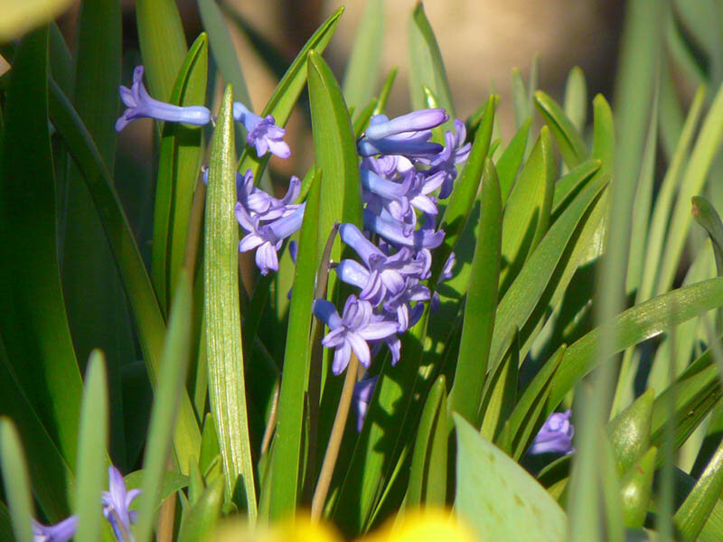

Meaning: Please forgive me
Origin
The hyacinth takes its name and meaning from Greek mythology. Hyacinthus, a beautiful young man, was beloved by Apollo. During a game of discus throwing, Apollo’s discus was knocked from its course by a jealous Zephyrus, striking Hyacinthus and killing him. Hyacinth flowers were said to have grown from the blood that fell from his head wound as Apollo begged his forgiveness.
Gallery



